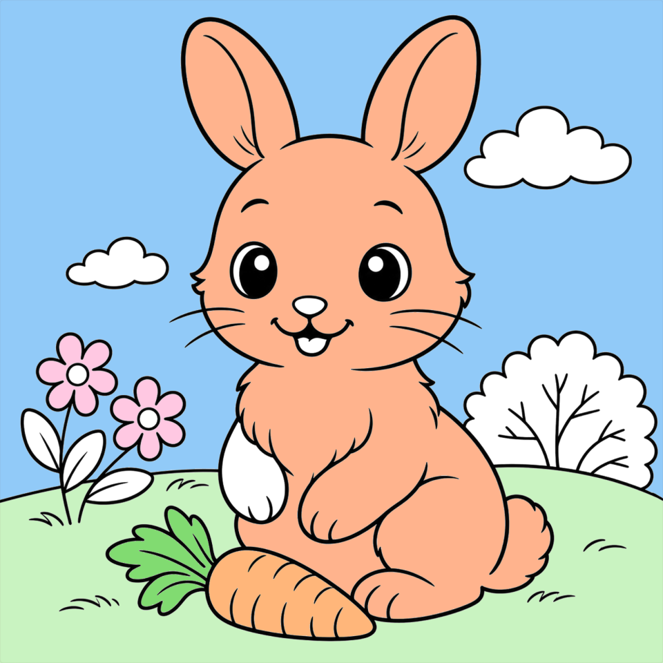
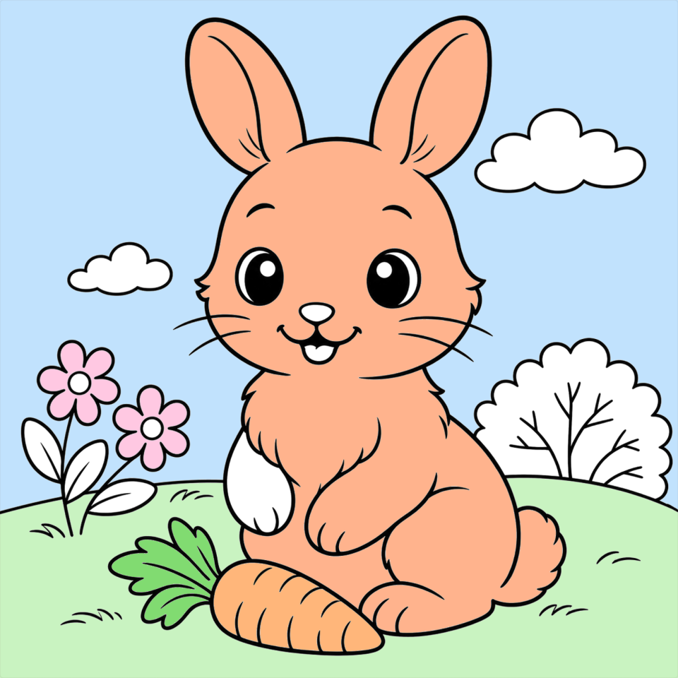
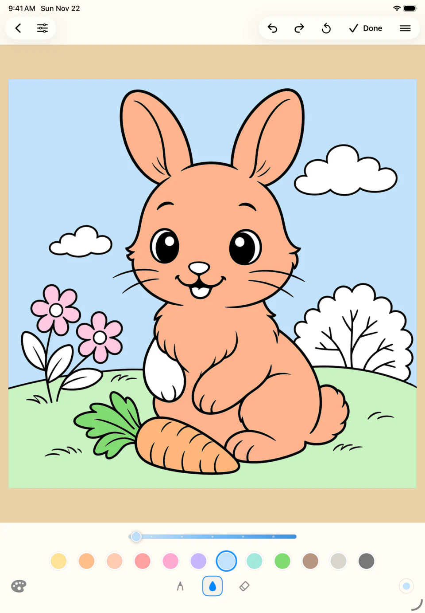

How to Make the Main Subject Stand Out on a Coloring Page
Pick the part of your coloring page you want people to notice first, then look at the color right beside it. Here, look at the blue around the bunny’s ears.
One bunny, two blue skies


The bunny is the same peach in both pictures, even if it looks a little different against each sky. Both skies start with the same blue swatch. The one on the right is lighter and less saturated.
Check the picture in grayscale
Value is how light or dark a color looks. In the gray pictures below, look just inside the ear outline and just outside it in the sky.
On the right, the ears have more contrast against the sky. The white clouds have less. For more on value and contrast, see the Getty Museum’s guide to describing art.
Try it on paper
- Download the bunny practice page (PNG) and print two copies. Give the bunny the same peach color on both.
- Color one sky medium blue and the other pale blue. With a colored pencil, you can press more lightly for the pale sky. With markers, test two blues on scrap paper first.
- Put the copies side by side under the same light. Hold them at arm’s length and see which sky makes the ears easier to pick out.

On another page, try a lighter color beside a dark shape you want to emphasize, or a darker color beside a light one.
Try it in Happy ColorPad
Open the bunny in the Animals section of the gallery or import the practice page from Photos.
- Tap the droplet-shaped Fill Tool and fill the bunny with a medium peach.
- Pick blue and move the color-strength slider about a third of the way from the left. Fill the sky and take a screenshot.
- Tap Undo to remove the sky fill. Keep the same blue selected, move the slider left, and fill the sky again.
- Take a second screenshot, then flip between the two in Photos. Look at the same spot around the ears each time.

Happy ColorPad is free to download on iPhone and iPad with iOS 17 or iPadOS 17 or later.
Get Happy ColorPad